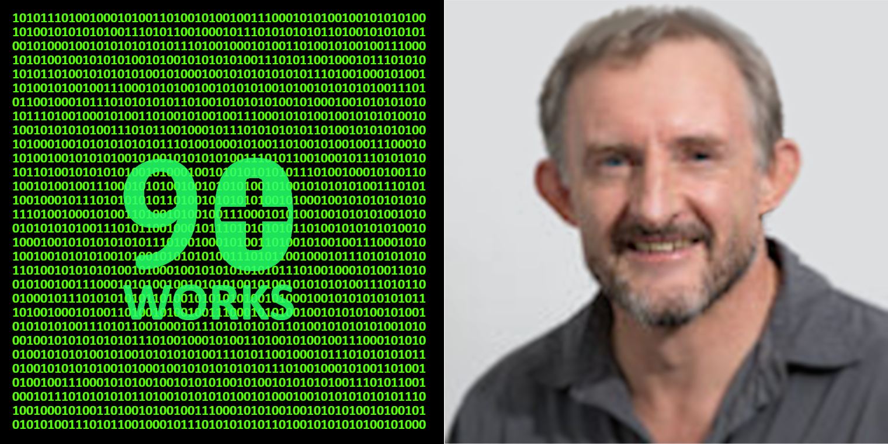

My name is Theuns Dirkse-van Schalkwyk.
I’m the founder of 90Plus Works, an engineering entity who wants to help you to improve your business.
I’m currently available for consultations. I’m based in Stellenbosch, but can travel or collaborate remotely.
Process to achieve:
Inquire, envision and inspire.
Values to emulate:
Integrity, mastery, quality, joy and compassion.
Preferred working environment:
Innovation, design and improvement focused projects or development and
research of new products and processes.
Cabilities: Strategic systems thinking and modelling, creative solutions,
innovation, understanding complexity, design and problem-solving through the use of process and data analysis,
process design, programming (R, Python, JavaScript) and simulation.
University of Stellenbosch: B.Ing Mechanical Engineering, MSc Industrial Engineering,
PhD Industrial Engineering and Stellenbosch Business School (USB) HBA Honours, Business and Administration.
Previous work for:
SlipaMed UK(injection mould),
IBS Germany(train scheduling), RSA Government task force (“National Strategy on Micro-manufacturing”),
Mecoladder Capetown (design of a automated ladder manufacturing machine),
Altech (Systems Engineering and software training),
Spoornet Cape Town (business process reengineering, ISO9000, scheduling and quality control)
and SpaceBric(Pty)Ltd (manufacturing and software)
email: 90plusworks@protonmail.com
Our standard contract is meant to protect your IP,
but you are welcome to draft your own contract if you prefer.